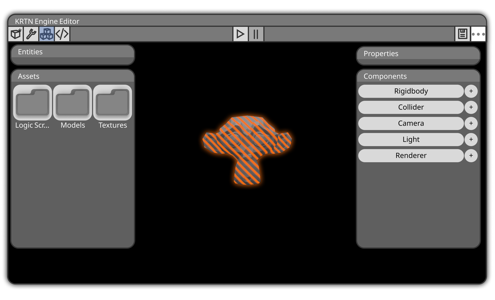
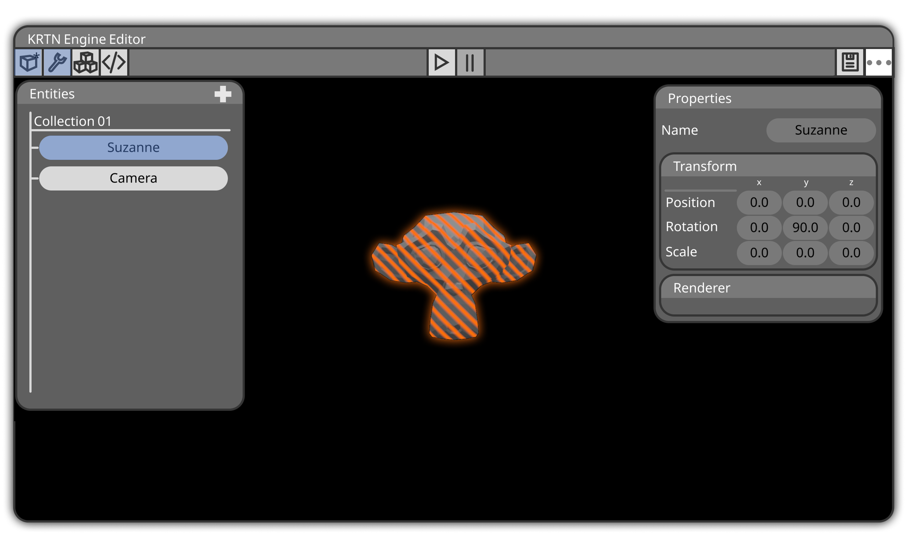
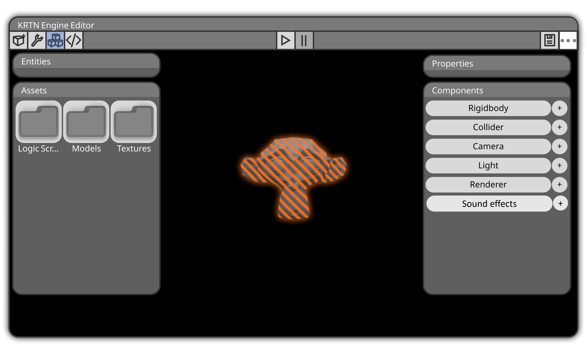
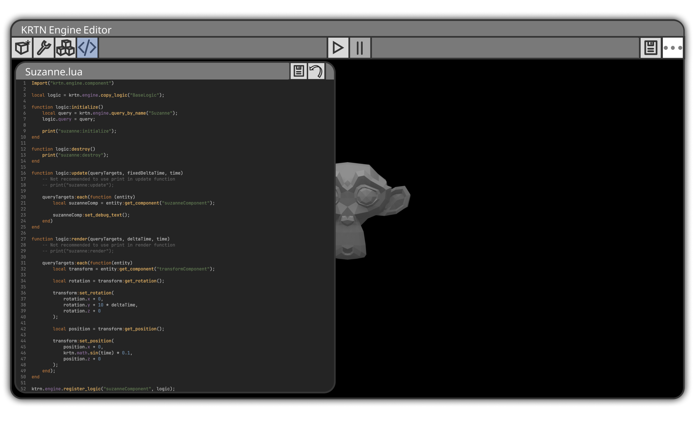
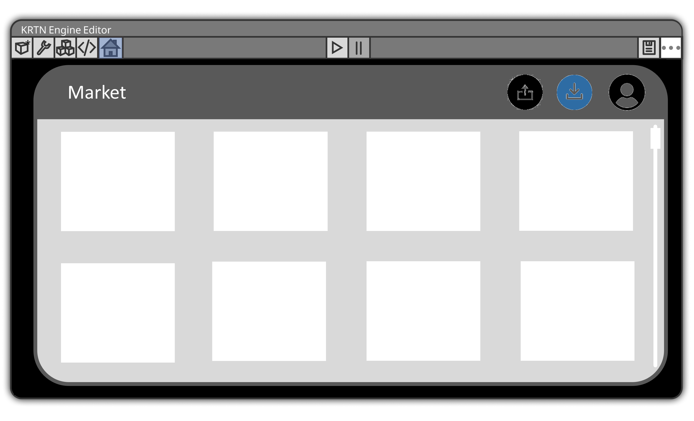

1. Bevezetés
2. Telepítés
3. Projektek Kezelése
4. Grafikus Felhasználói Interfész
4.1. Objektumok létrehozása
4.2. Objektumok pozícionálás
4.3. Kamera kezelése
4.4 Asset-k használata
4.5. Hangok használata
5. Scripting
6. Market használata
A 3D multi-purpose game engine (motor) egy olyan szoftveres keretrendszer, amely lehetővé teszi a fejlesztők számára, hogy 3D-s játékokat hozzanak létre és kezeljenek. Ezek a motorok számos funkciót biztosítanak, amelyek segítik a játékfejlesztési folyamatot. Néhány ismert 3D multi-purpose game engine közé tartozik az Unreal Engine, Unity, CryEngine és Godot Engine. Ezek a motorok széles körű lehetőségeket biztosítanak a fejlesztőknek, és segítenek létrehozni 3D-s játékokat, csökkentve annak fejlesztési költségeit illetve idejét.
A telepítést megelőzőleg ellenőrizzük az internet kapcsolatot, majd működő kapcsolat esetén az adott oldalon található Download/Letöltés felitara kattintva autómatikusan elindul a kliens telepítése. Ezután mminden java nyelvet és OpenGL-t támogató operációs rendszereken futtatható a program, egyedül a LWJGL és Gson könyvtárak hiánya okozhat futtatási hibát.
A menüsor jobb szélén található flopi alakú gombbal lehet gyorsmenteni, ami a CRTL+S billentyűk lenyomásával is elérhető. Projecktek megnyitása, illetve létrehozása a Mentés melletti 3 pontot tartalmazó gombbal lehetséges. A rákattintást követően a megjelenő listában található többek között a 'Mentés másként','Projekt megnyitása' és az 'Új projekt' is.
A képen látható módon az Objektumokat, avagy Entity-ket tartalmazó ablak a bal felső sarokban látható legszélső gombbal érhető el. Az Entity ablak megjelenése után láthatók a már létező objektumok. Újak hozzáadása pedig a + gombbal történik, a gomb lenyomása után megjelenik egy ablak, amelyikben kilehet választani, hogy a beépített modellek közül akarunk hozzáadni vagy ha egy sajátot, akkor az 'Egyéb'-re kattintva tallózhatjuk a meghajtónkról. A
Egy objektum pozícióját, elforgatását illetve méretét a Properties ablakban érhetjük el. Az ablak megjelenítése a bal fent található csavarkulcs gombbal lehetséges. Az ablak tartalmazza a kiválasztott objektum adatait, amik azok átírásával változtathatók meg.
A kamera is egy objektumként van kezelve, így annak pozícionálása és mozgatása az objektumokkal megegyező módon történik. Lásd 5.2. alpont.
Az 'Assets' és 'Components' menü ablakok megnyitása a bal felül található gombbal történik. Az Assets ablakban találhatók a projekt által tartalmazott képek, hangok, textúrák és kész modellek is. Itt az Assetek mappákba való csoportosítása megkönnyítheti a fejlesztő számára a munkát. A Components ablakban állíthatók be egyes Entity-k fizikai tulajdonságai, ilyen például a 'Rigidbody' illetve a 'Collider' is.
A Hangok használata a 'Components' ablakban tálálható, amiben a Sound Effects fülben adható hozzá hanghatások. A hang fájlok formátuma MP3, WAV,OGG illetve FLAC lehet.
A scriptek használata elengedhetetlen része egy Game Engine-nek. Scriptinggel lehet befolyásolni az objektumok dinamikus mozgatását, létrehozását stb. A sctripteket tartalamazó ablak a bal felső gombbal nyitható meg, ezután a szerkezteni kívánt script file fiválasztása után az ablakban csak a script fog megjelenni. A megnyitott script az ablak jobb felső sarkában lévő flop alakú gombbal menthető, míg visszalépni a scriptek listájához az ablak sarkéban található nyíllal lehetséges.
- A Market ablak a bal menüsor utolsó gombjával nyitható meg. A Market használata csak felhasználó fiókkal lehetséges, a regisztrációhoz az ablak jobb oldalán látható user iconra kattintva lehetséges illetve a bejelentkezls is itt történik. A középső icon a Marketre feltöltött modellek, projektek stb. letöltése lehetséges. Míg a bal oldali icon a feltöltésre szolgál. A feltöltés során néhány jellemző, valamint egy rövid leírás megadása kötelező.
